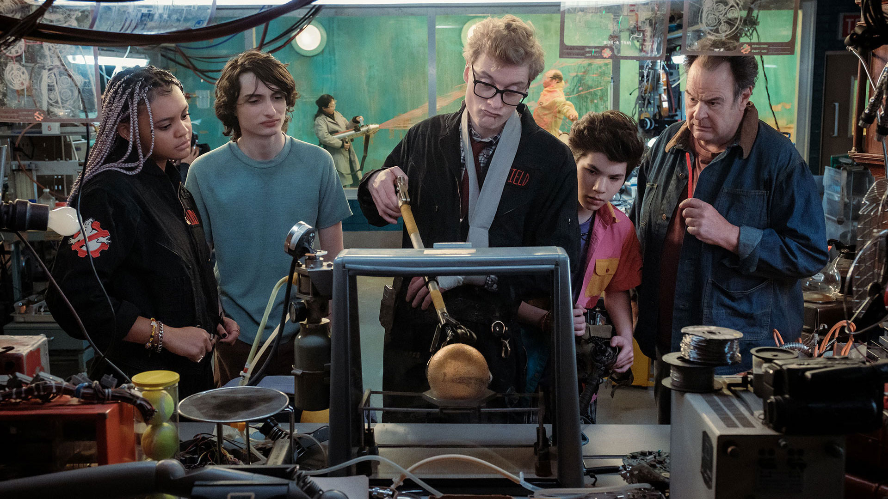
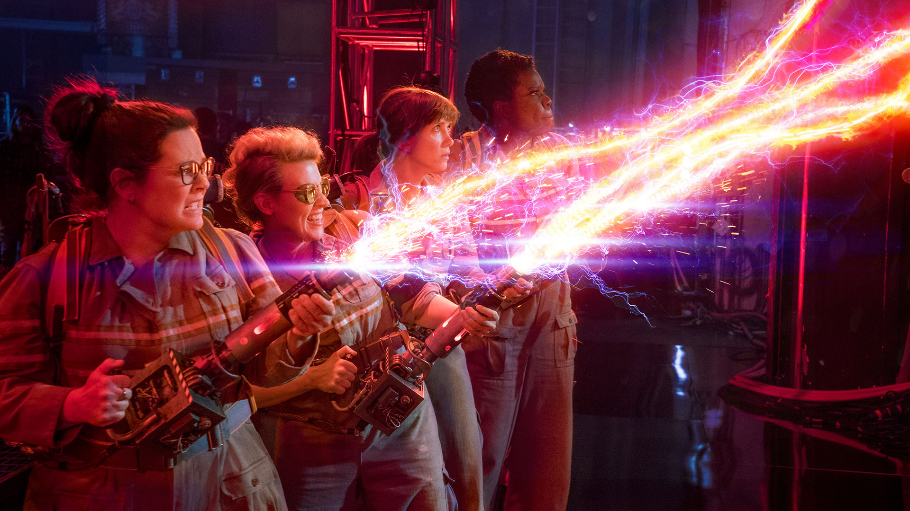

Welcome to Ghostbusters Inc. official page
where the ghosts are kept away in a cage.
Whether an unexplained shadow ruined a cozy night in, a poltergeist interrupted your peaceful Sunday morning coffee, or a rainy afternoon suddenly felt a little too cold, you have come to the right place. At Ghostbusters Inc., we believe your home should be haunted by good memories, not restless spirits. Whatever goes bump in the night, we are here to make sure it stays gone.
Below are some of our best services we can offer straight away:
-
Paranormal Investigation & Research:

Strange noises in the night, unexplained cold spots, or objects moving on their own can leave you questioning your own sanity. Our Paranormal Investigation and Research team uses state-of-the-art PKE meters, thermal imaging, and spectral analysis to uncover the truth behind your haunting. We conduct thorough historical research into your property to identify the exact class and origin of the entity you are dealing with. Rather than guessing, we gather hard scientific data to determine whether you are facing a harmless residual echo or a hostile full-torso apparition. Once our assessment is complete, you receive a comprehensive spectral report detailing the threat level and a clear roadmap for resolving the issue.
-
Spook Elimination & Capture:

When a ghostly presence crosses the line from spooky to dangerous, our certified containment specialists step in to clear your property safely. Equipped with unlicensed nuclear accelerators, commonly known as proton packs and high-capacity muon traps, we neutralize and capture entities of all classifications. Our technicians are trained to execute extractions with minimal collateral damage to your home, office, or historic landmark. Every captured entity is safely transported back to our headquarters and secured inside our high-density laser containment grid. You can breathe easy knowing the threat has been permanently removed from your premises.
-
Fortification & Protection:
Why wait for a haunting to happen when you can shield your property against spectral intrusions before they start? Our Fortification and Protection service reinforces your home or business against unwanted paranormal visitors using custom psycho-reactive barriers and metaphysical grounding techniques. We inspect your building's architecture for dimensional weak points, ley-line intersections, and lingering negative energy that naturally attract wandering spirits. Our team then installs discreet containment wards and anti-ectoplasmic plating to keep your space spiritually sealed. Whether you are moving into an older building or safeguarding a high-risk facility, we ensure your peace of mind stays intact.
-
Vigilance & Aftercare:
Eliminating a ghost is only half the battle; making sure it stays gone is where our Vigilance and Aftercare program shines. Following any major containment operation, our team performs scheduled follow-up sweeps to verify that all residual ectoplasm has been cleared and no secondary entities have moved into the vacuum. We provide you with easy-to-use monitoring equipment and 24/7 priority dispatch access in case of sudden paranormal relapse. Our specialists also offer property restoration advice to help neutralize any lingering atmospheric dread left behind by an intense haunting. With Ghostbusters Inc. watching your back, you will never have to face the unknown alone again.
Pricing:
Our pricing has historically been improvised or negotiated based on the severity of the haunting and their own urgent operational overhead. You never know. You might get rid of your annoyance for a can of beer.
Why choose us?
- Unlicensed Nuclear Accelerators: We strap high-energy particle colliders to our backs so you don't have to and we promise we rarely cross the streams.
- Zero Judgments, Minimal Slime: Whether it's a Victorian widow in the attic or a Class-5 full-roaming vapor eating your fridge, we've seen weirder and we bring our own mop.
- 24/7 Emergency Dispatch: Ghosts don't respect business hours, and neither does our coffee machine. We're ready to roll out at 3:00 AM sharp.
- Satisfaction Guaranteed (Or Your Ghost Back): If a captured specter ever escapes our containment grid and returns to haunt you, the next trap is completely on the house.
Testimonials:
Arthur Pendelton — General Manager at The Sedgewick Hotel
"A Class-5 full-roaming vapor ate three crates of imported caviar and slimed my best bellhop during a gala dinner. Ghostbusters Inc. showed up in twenty minutes, trapped the thing in the grand ballroom, and only charred one chandelier. Worth every penny."
Evelyn Vance — Head Archivist at Mercer Public Library
"For weeks, something in the basement kept rearranging our horror section and whispering spoilers to patrons. Their research team pinpointed a 19th-century Victorian spirit in under an hour and sealed the stacks. The library is finally quiet again, just how it should be."